Cleverly
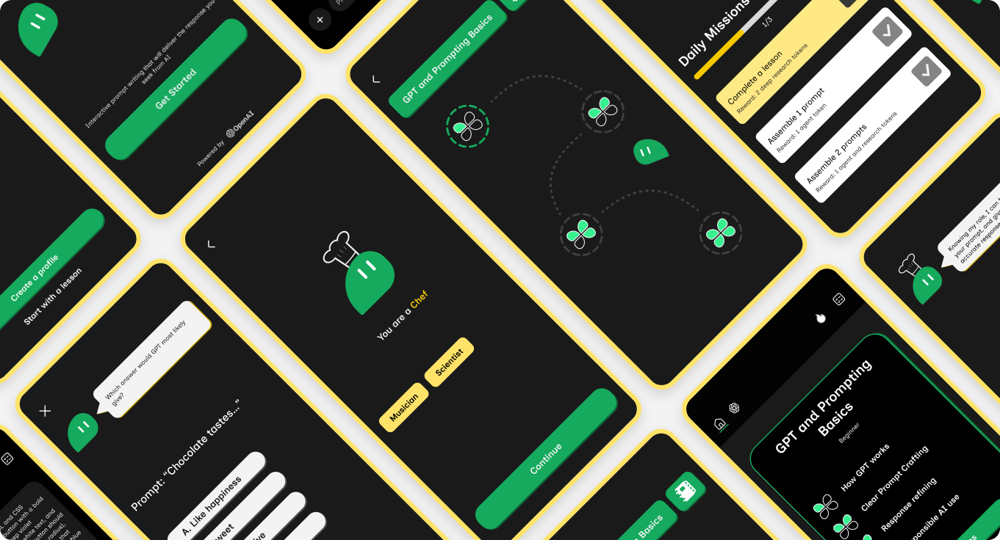
Research Phase
To establish the foundation of this open brief, I defined my scope of interest around gamified learning experiences and artificial intelligence. This allowed me to explore how interactive mechanics can be combined with emerging AI technology.
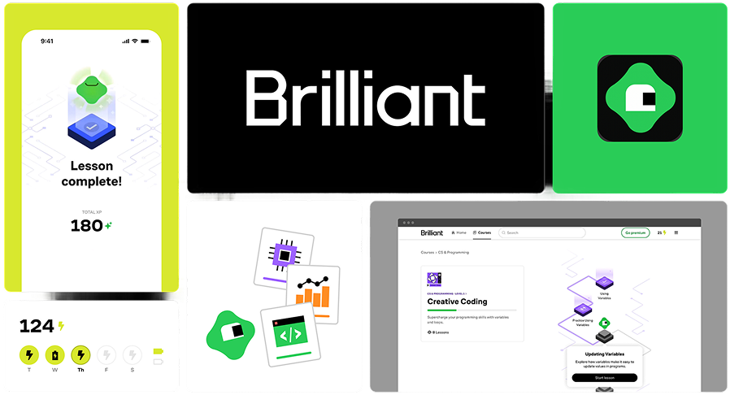
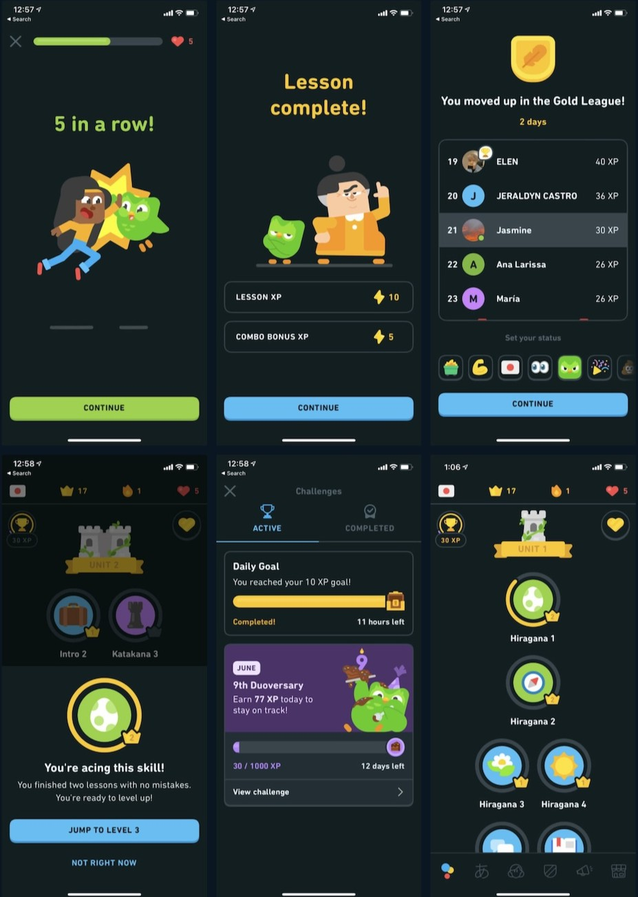
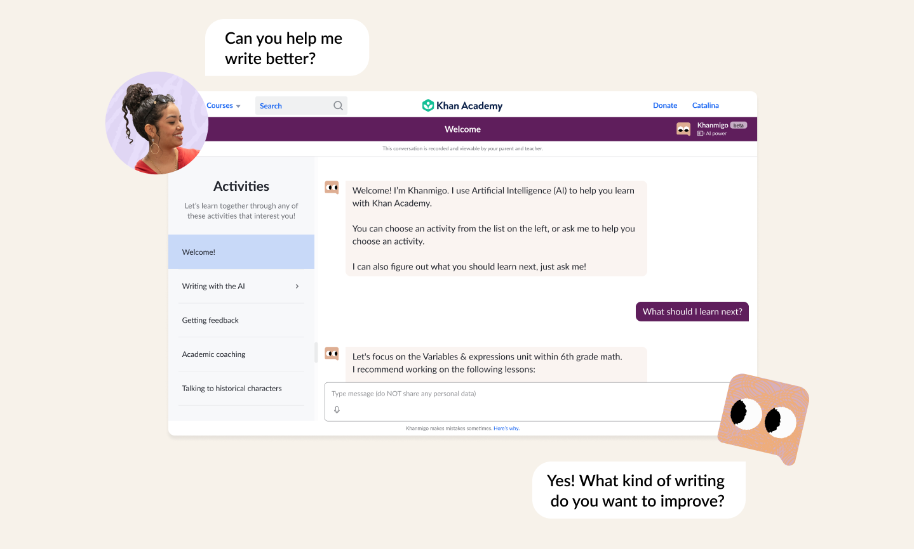
I surveyed students about their daily usage of AI and perceived value. The resulting data gave the critical insights needed to better understand real-world AI consumption and identify key user pain points.
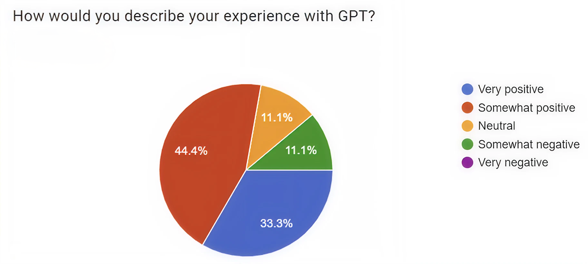
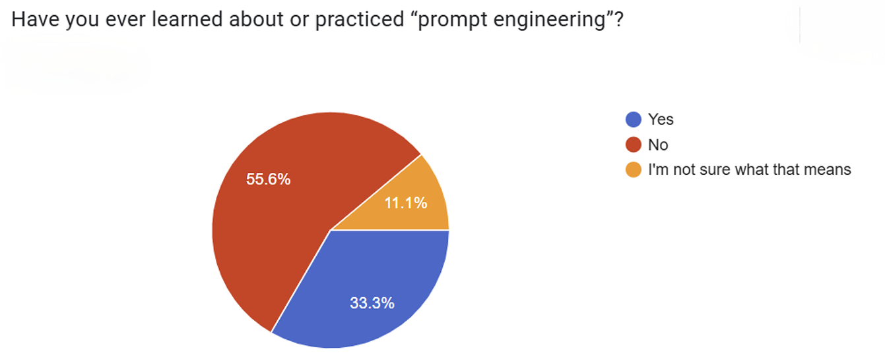
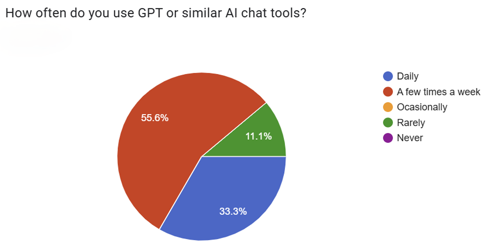
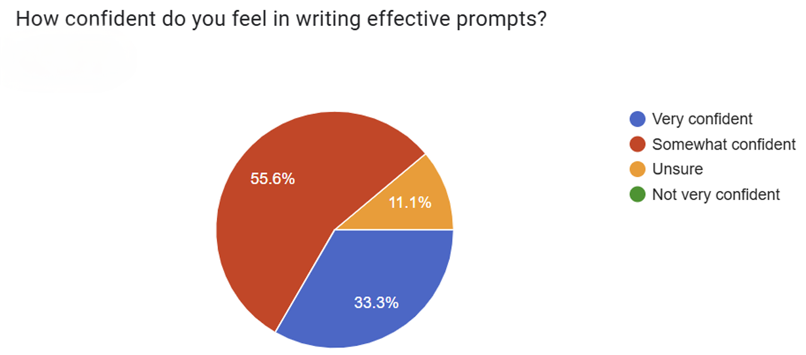
Branding
With the core insights established, I structured the platform's brand essence to ground the visual identity and product tone.
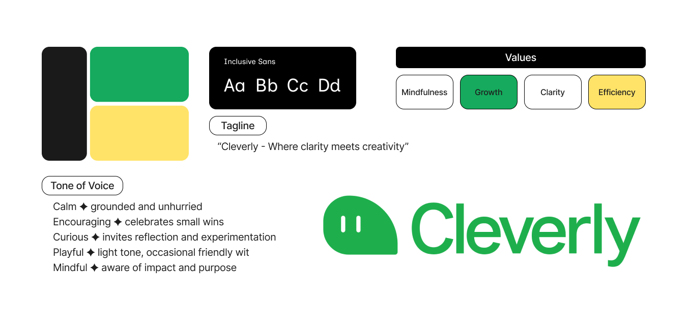
Prototyping/Testing
Using Figma, I developed an interactive prototype to map out the complete user flow. I conducted usability testing throughout the design phase, iterating on the layouts in real time based on user feedback.
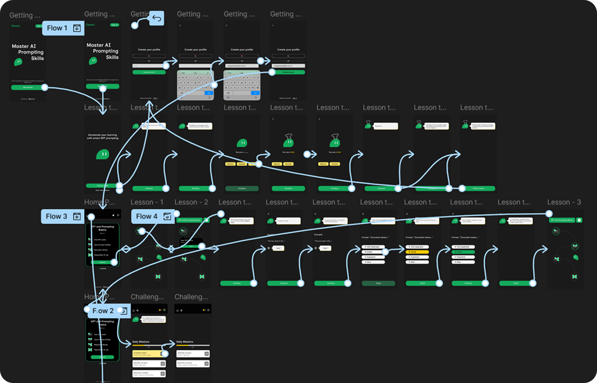
Final Result
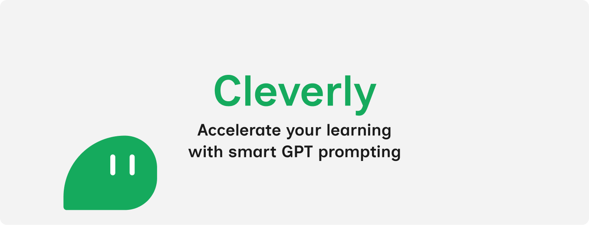
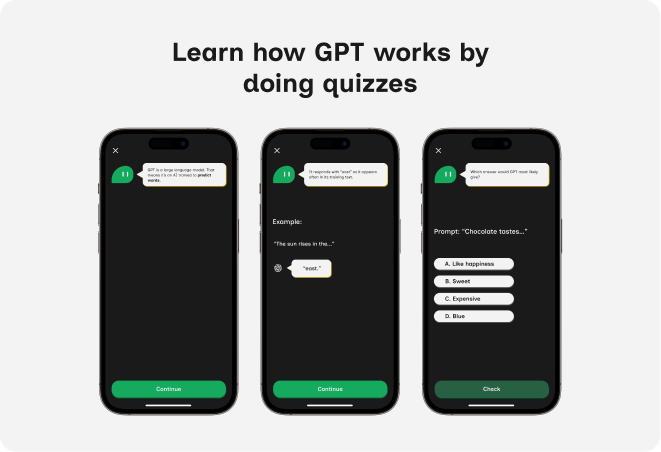
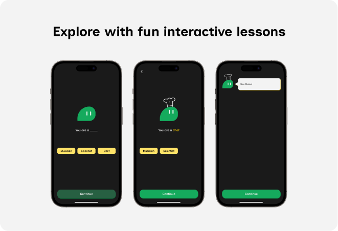
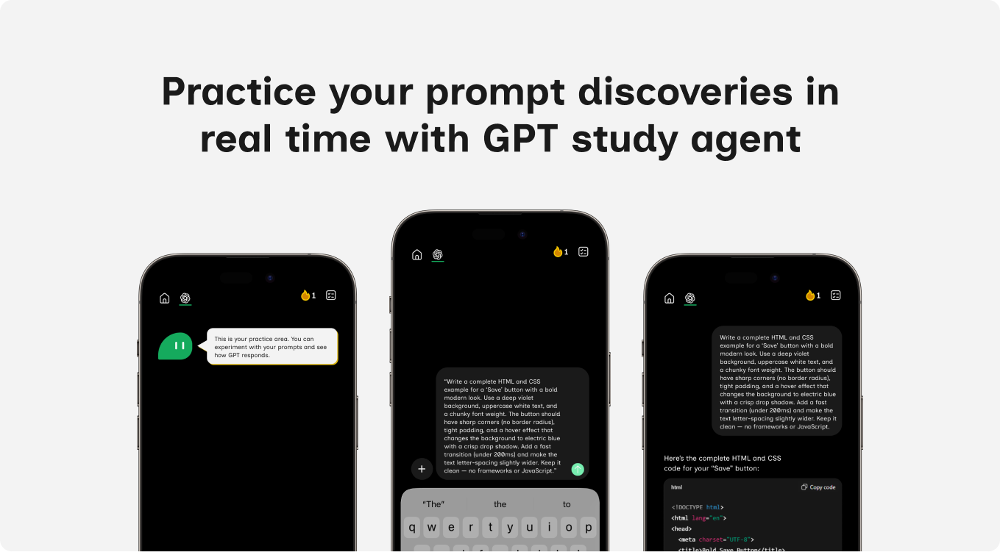
Credit
While this project was an entirely solo design sprint, it was shaped deeply by the critique of my lecturers and external industry exposure. Having the chance to visit tech leading companies and see how they leverage AI was a deep inspire alongside main program.
Technology
Timeline
8 weeks
Fonts
Inclusive Sans